华发校准检查 · 现行 OC vs 模型 v4（35 场 · 17 人 · 4.2 小时，10/7 起）
模型 v4 = 端上因果版（训练时没见过华发数据），加了"冻结数据不推理"和"按真实时间衰减"两项修正。现行 OC = 线上结算用的规则校准。
怎么看图：每张图左边现行 OC、右边模型，是主链路"脚部选择对比"图：绿实线左脚、蓝虚线右脚，上到下横滚 / 俯仰 / 偏航。两只脚在同一块板上，横滚两条线应该基本重合；标题里的 r 是左右横滚相关、均值差是两条线整体错开多少度。
分档：OK = 相关 ≥0.85 且均值差 ≤5° 且 MAE ≤8°；可疑 = 0.7 / 10° / 12°；其余为差。人名已换编号。
总体（按时长）
| 不校准 |
OK 32% · 可疑 21% · 差 47% |
| 现行 OC |
OK 79% · 可疑 13% · 差 8% |
| 模型 v4 |
OK 93% · 可疑 6% · 差 1% |
结论速览
- 要看 7 场：模型仍有差段，或比现行 OC 差（主要是整体错开几度）。
- 可以看 14 场：多数是现行 OC 校准坏了、模型救回来的场次（晃动大的人基本都在这里），另有几场有"数据冻结"。
- 不用看 14 场：两种校准都正常。
- 晃动/挪位：35 场里 ≥5° 的安装角变化共 150 次，九成发生在趟与趟之间（坐缆车、休息时动过）；模型约 70% 能在 1 分钟内跟上。
每场一览
| 关注 | 人 | 时间 | 滑行(分) | 晃动最大的脚 · 95% 范围 | 挪位次数(≥5°) | 现行 OC OK / 差 | 模型 OK / 差 | 为什么 | 备注 |
|---|
| 要看 | H05 | 10-09 08:29 | 14.9 | 左脚 7° | 4 | 89% / 11% | 89% / 11% | 模型仍有差段 11% | |
| 要看 | H09 | 10-07 02:33 | 2.7 | 左脚 10° | 3 | 51% / 0% | 76% / 0% | 模型 OK 仅 76% | |
| 要看 | H12 | 10-13 08:49 | 14.7 | 右脚 5° | 4 | 93% / 0% | 54% / 0% | 模型 OK 仅 54%；模型比 OC 差的段 9 个 | |
| 要看 | H13 | 10-11 01:47 | 12.9 | 左脚 5° | 2 | 95% / 5% | 95% / 5% | 模型仍有差段 5%；模型比 OC 差的段 3 个 | |
| 要看 | H13 | 10-11 05:27 | 19.0 | 左脚 5° | 4 | 100% / 0% | 100% / 0% | 模型比 OC 差的段 5 个 | 数据冻结 7.8%（加门后模型正常） |
| 要看 | H15 | 10-11 01:34 | 7.7 | 右脚 12° | 7 | 21% / 14% | 94% / 6% | 模型仍有差段 6% | |
| 要看 | H16 | 10-13 02:19 | 9.1 | 右脚 3° | 0 | 100% / 0% | 81% / 0% | 模型比 OC 差的段 5 个 | |
| 可以看 | H03 | 10-07 02:00 | 8.3 | 右脚 50° | 15 | 38% / 46% | 87% / 0% | OC OK 38% → 模型 87%（模型救回）；右脚晃动 49.5° | |
| 可以看 | H04 | 10-11 01:48 | 6.4 | 右脚 9° | 11 | 100% / 0% | 100% / 0% | | 数据冻结 11.3%（加门后模型正常） |
| 可以看 | H04 | 10-11 04:56 | 6.8 | 右脚 14° | 11 | 89% / 0% | 100% / 0% | | 数据冻结 53.1%（加门后模型正常） |
| 可以看 | H07 | 10-10 06:06 | 4.8 | 左脚 5° | 2 | 100% / 0% | 100% / 0% | | 数据冻结 5.0%（加门后模型正常） |
| 可以看 | H10 | 10-09 10:23 | 9.2 | 右脚 10° | 4 | 100% / 0% | 100% / 0% | | 数据冻结 25.6%（加门后模型正常） |
| 可以看 | H10 | 10-09 12:52 | 3.2 | 右脚 6° | 1 | 66% / 0% | 100% / 0% | OC OK 66% → 模型 100%（模型救回） | 数据冻结 36.1%（加门后模型正常） |
| 可以看 | H14 | 10-13 02:40 | 8.1 | 右脚 48° | 11 | 30% / 62% | 100% / 0% | OC OK 30% → 模型 100%（模型救回）；右脚晃动 47.5° | |
| 可以看 | H15 | 10-07 01:47 | 5.4 | 右脚 12° | 4 | 0% / 8% | 100% / 0% | OC OK 0% → 模型 100%（模型救回） | |
| 可以看 | H15 | 10-08 01:32 | 7.1 | 右脚 17° | 11 | 39% / 23% | 100% / 0% | OC OK 39% → 模型 100%（模型救回）；右脚晃动 16.6° | |
| 可以看 | H15 | 10-12 01:34 | 8.2 | 右脚 52° | 14 | 29% / 43% | 85% / 0% | OC OK 29% → 模型 85%（模型救回）；右脚晃动 51.8° | |
| 可以看 | H15 | 10-16 01:31 | 8.2 | 右脚 8° | 11 | 38% / 0% | 100% / 0% | OC OK 38% → 模型 100%（模型救回） | |
| 可以看 | H17 | 10-07 02:19 | 4.6 | 右脚 17° | 7 | 0% / 37% | 91% / 0% | OC OK 0% → 模型 91%（模型救回）；右脚晃动 17.2° | 数据冻结 5.5%（加门后模型正常） |
| 可以看 | H17 | 10-13 02:24 | 1.6 | 右脚 16° | 4 | 61% / 39% | 100% / 0% | OC OK 61% → 模型 100%（模型救回）；右脚晃动 16.2° | |
| 可以看 | H17 | 10-13 02:48 | 5.5 | 右脚 5° | 2 | 81% / 0% | 81% / 0% | | 87° 立刃那场：右脚单侧受力形变，校准修不掉 |
| 不用看 | H01 | 10-10 05:42 | 17.4 | 右脚 6° | 5 | 100% / 0% | 100% / 0% | 两种校准都正常 | |
| 不用看 | H01 | 10-10 07:18 | 1.3 | 左脚 0° | 0 | 100% / 0% | 100% / 0% | 两种校准都正常 | |
| 不用看 | H02 | 10-10 05:31 | 8.7 | 右脚 3° | 1 | 100% / 0% | 100% / 0% | 两种校准都正常 | |
| 不用看 | H02 | 10-10 06:40 | 5.4 | 右脚 6° | 2 | 100% / 0% | 100% / 0% | 两种校准都正常 | |
| 不用看 | H05 | 10-06 16:13 | 2.0 | 左脚 0° | 0 | 100% / 0% | 100% / 0% | 两种校准都正常 | |
| 不用看 | H05 | 10-09 06:08 | 9.6 | 右脚 3° | 1 | 83% / 0% | 83% / 0% | OC 83% / 模型 83%，两者一致、无明显问题 | |
| 不用看 | H06 | 10-07 02:23 | 4.5 | 左脚 8° | 3 | 100% / 0% | 100% / 0% | 两种校准都正常 | |
| 不用看 | H07 | 10-10 05:31 | 4.8 | 右脚 4° | 4 | 100% / 0% | 100% / 0% | 两种校准都正常 | |
| 不用看 | H07 | 10-10 06:43 | 1.1 | 左脚 0° | 0 | 100% / 0% | 100% / 0% | 两种校准都正常 | |
| 不用看 | H07 | 10-10 06:59 | 2.1 | 左脚 4° | 0 | 100% / 0% | 100% / 0% | 两种校准都正常 | |
| 不用看 | H08 | 10-09 05:47 | 5.0 | 右脚 2° | 0 | 100% / 0% | 100% / 0% | 两种校准都正常 | |
| 不用看 | H08 | 10-09 06:31 | 15.1 | 右脚 3° | 0 | 100% / 0% | 100% / 0% | 两种校准都正常 | |
| 不用看 | H10 | 10-09 11:57 | 5.2 | 左脚 8° | 2 | 100% / 0% | 100% / 0% | 两种校准都正常 | |
| 不用看 | H11 | 10-12 03:57 | 2.1 | 左脚 3° | 0 | 100% / 0% | 100% / 0% | 两种校准都正常 | |
要看 要看：模型还有问题，需要逐段核对
H05 · 10-09 08:29 · 滑行 14.9 分钟
现行 OC：
OK 89% · 可疑 0% · 差 11%模型 v4：
OK 89% · 可疑 0% · 差 11%模型仍有差段 11%；晃动最大：左脚 7°，挪位 4 次
09:45:23 · 101s · 现行 OC 差（相关 0.67，均值差 +6.8°）→ 模型 差（相关 0.66，均值差 +5.3°）
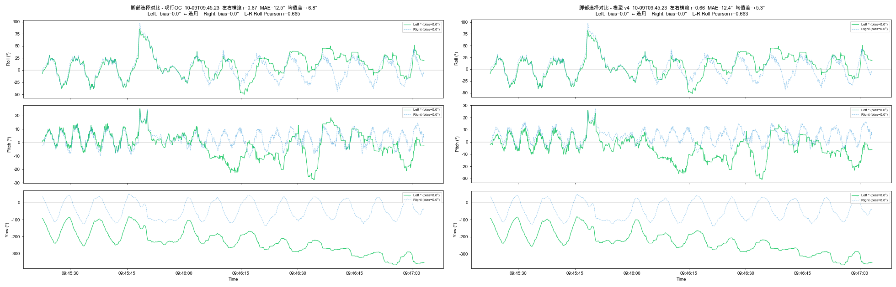
09:12:17 · 87s · 现行 OC OK（相关 0.98，均值差 +0.3°）→ 模型 OK（相关 0.98，均值差 -3.3°）
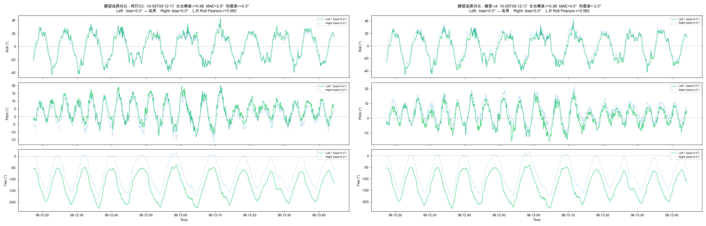
H09 · 10-07 02:33 · 滑行 2.7 分钟
现行 OC：
OK 51% · 可疑 49% · 差 0%模型 v4：
OK 76% · 可疑 24% · 差 0%模型 OK 仅 76%；晃动最大：左脚 10°，挪位 3 次
03:01:08 · 38s · 现行 OC OK（相关 0.99，均值差 +4.1°）→ 模型 可疑（相关 0.99，均值差 -5.8°）
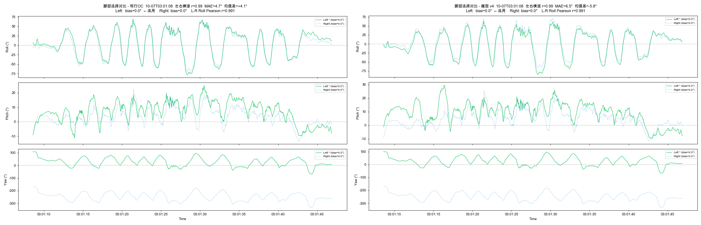
02:48:40 · 32s · 现行 OC 可疑（相关 0.99，均值差 +6.8°）→ 模型 OK（相关 0.99，均值差 -1.8°）
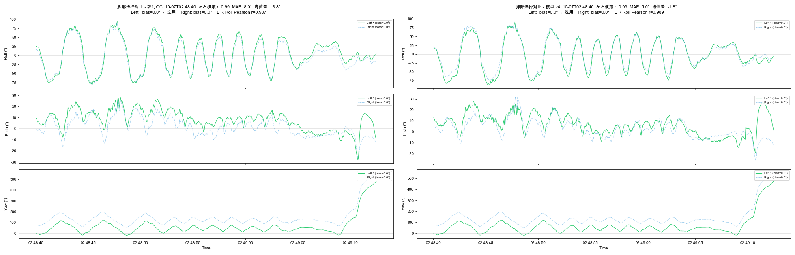
H12 · 10-13 08:49 · 滑行 14.7 分钟
现行 OC：
OK 93% · 可疑 7% · 差 0%模型 v4：
OK 54% · 可疑 46% · 差 0%模型 OK 仅 54%；模型比 OC 差的段 9 个；晃动最大：右脚 5°，挪位 4 次
10:29:42 · 56s · 现行 OC OK（相关 0.97，均值差 -2.2°）→ 模型 可疑（相关 0.97，均值差 -8.3°）
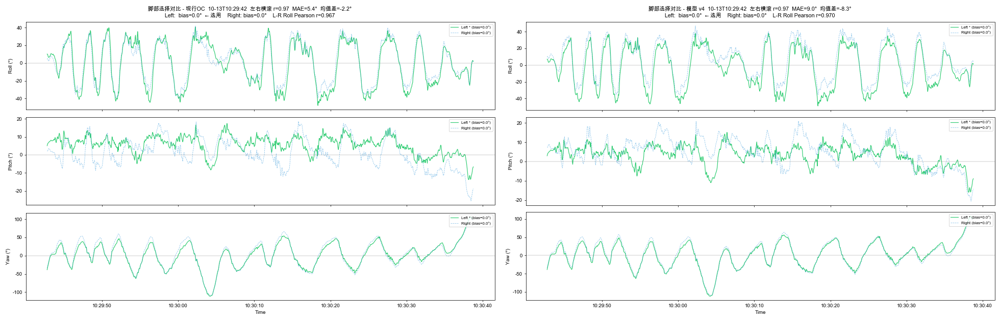
10:24:09 · 60s · 现行 OC OK（相关 0.98，均值差 +0.5°）→ 模型 可疑（相关 0.98，均值差 -6.1°）
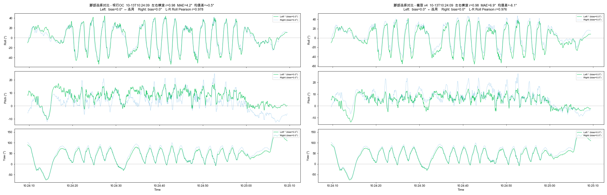
09:14:53 · 76s · 现行 OC OK（相关 0.98，均值差 +0.1°）→ 模型 可疑（相关 0.98，均值差 -5.0°）
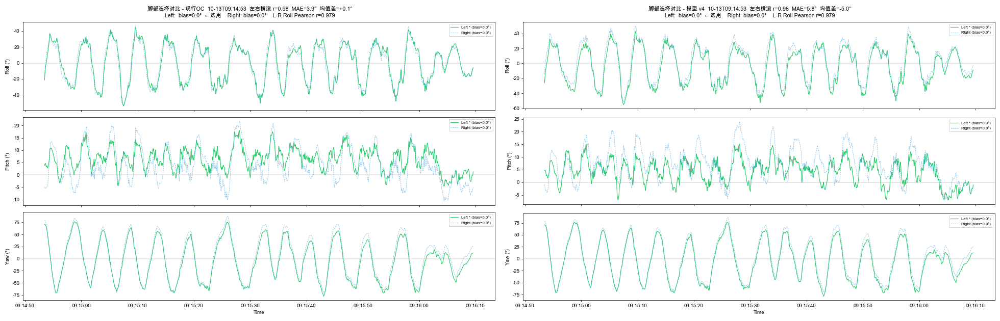
09:53:25 · 76s · 现行 OC OK（相关 0.98，均值差 +0.7°）→ 模型 可疑（相关 0.98，均值差 -5.1°）
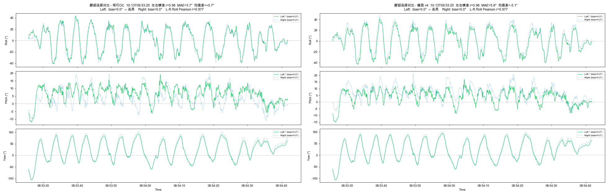
H13 · 10-11 01:47 · 滑行 12.9 分钟
现行 OC：
OK 95% · 可疑 0% · 差 5%模型 v4：
OK 95% · 可疑 0% · 差 5%模型仍有差段 5%；模型比 OC 差的段 3 个；晃动最大：左脚 5°，挪位 2 次
02:58:41 · 42s · 现行 OC 差（相关 -0.71，均值差 +1.8°）→ 模型 差（相关 -0.71，均值差 -3.2°）
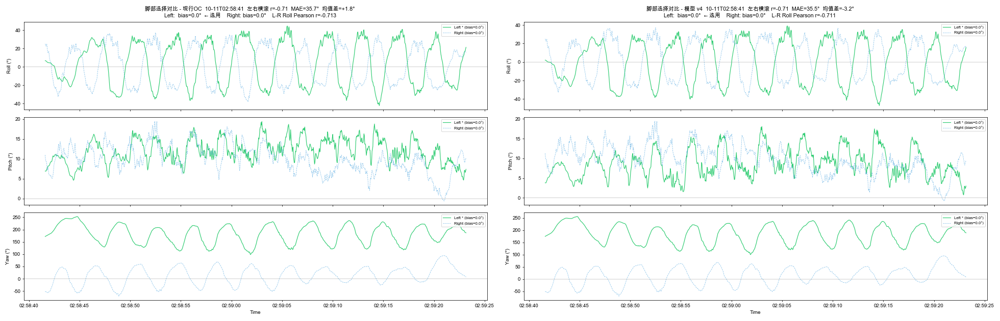
02:33:45 · 56s · 现行 OC OK（相关 0.97，均值差 +0.4°）→ 模型 OK（相关 0.97，均值差 -3.5°）
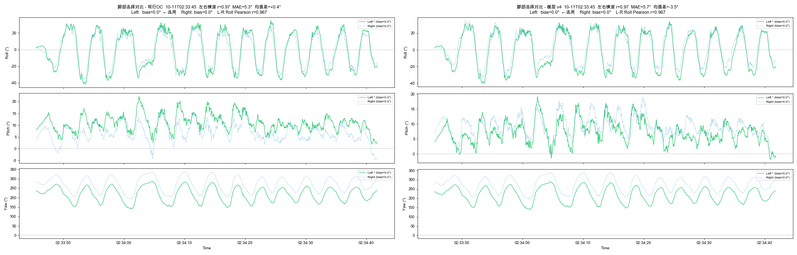
02:39:32 · 64s · 现行 OC OK（相关 0.96，均值差 +0.2°）→ 模型 OK（相关 0.96，均值差 -3.3°）
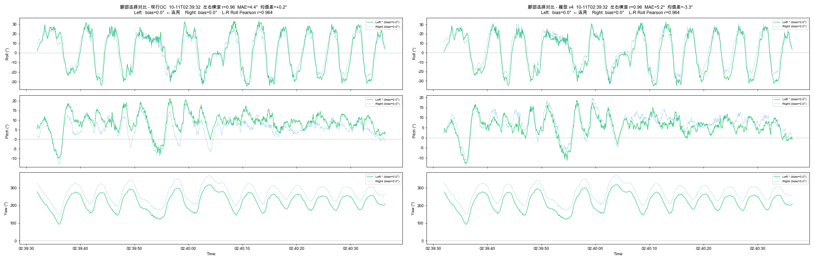
02:00:00 · 56s · 现行 OC OK（相关 0.98，均值差 +0.1°）→ 模型 OK（相关 0.98，均值差 -3.1°）
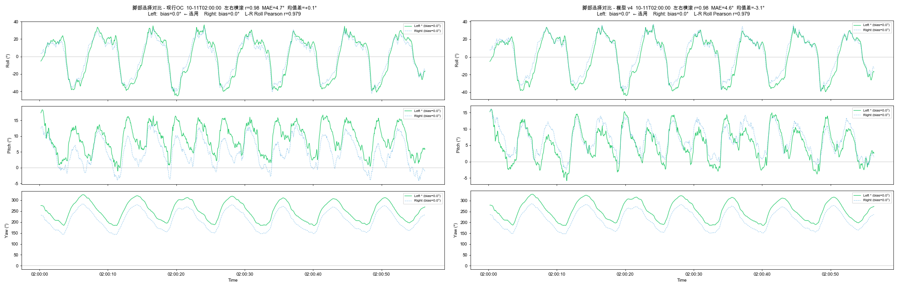
H13 · 10-11 05:27 · 滑行 19.0 分钟
现行 OC：
OK 100% · 可疑 0% · 差 0%模型 v4：
OK 100% · 可疑 0% · 差 0%模型比 OC 差的段 5 个；数据冻结 7.8%（加门后模型正常）；晃动最大：左脚 5°，挪位 4 次
06:41:26 · 67s · 现行 OC OK（相关 0.98，均值差 -0.0°）→ 模型 OK（相关 0.98，均值差 -3.8°）
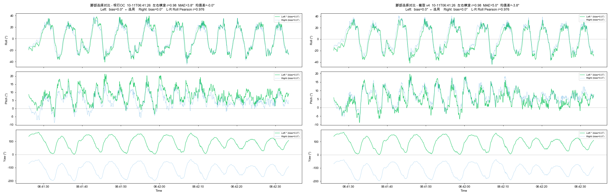
06:33:34 · 59s · 现行 OC OK（相关 0.98，均值差 +0.1°）→ 模型 OK（相关 0.98，均值差 -3.5°）
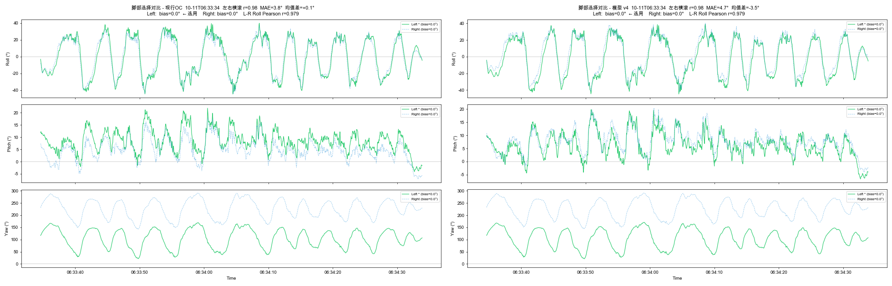
06:22:16 · 57s · 现行 OC OK（相关 0.98，均值差 +1.0°）→ 模型 OK（相关 0.98，均值差 -4.2°）
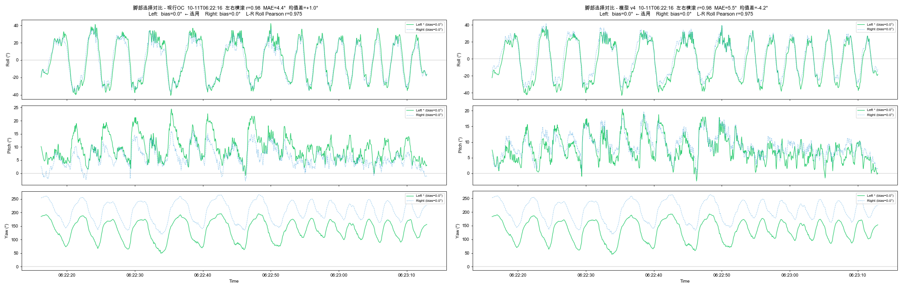
05:29:25 · 54s · 现行 OC OK（相关 0.96，均值差 -0.3°）→ 模型 OK（相关 0.96，均值差 -3.4°）
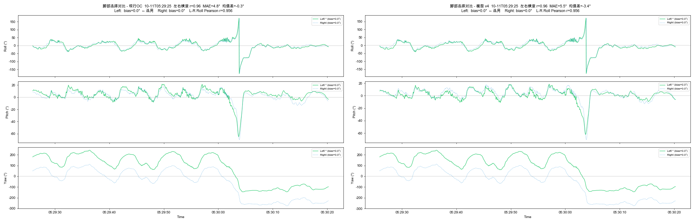
H15 · 10-11 01:34 · 滑行 7.7 分钟
现行 OC：
OK 21% · 可疑 65% · 差 14%模型 v4：
OK 94% · 可疑 0% · 差 6%模型仍有差段 6%；晃动最大：右脚 12°，挪位 7 次
03:34:32 · 26s · 现行 OC 差（相关 0.56，均值差 -5.6°）→ 模型 差（相关 0.56，均值差 -1.6°）
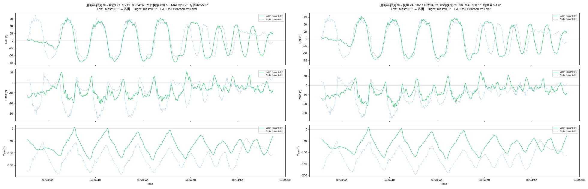
02:01:55 · 38s · 现行 OC 差（相关 0.99，均值差 -11.0°）→ 模型 OK（相关 0.96，均值差 +0.5°）
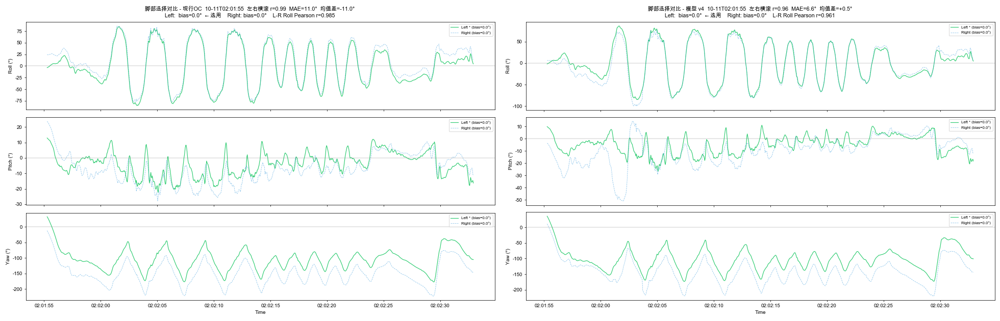
H16 · 10-13 02:19 · 滑行 9.1 分钟
现行 OC：
OK 100% · 可疑 0% · 差 0%模型 v4：
OK 81% · 可疑 19% · 差 0%模型比 OC 差的段 5 个；晃动最大：右脚 3°，挪位 0 次
02:39:32 · 50s · 现行 OC OK（相关 0.99，均值差 -0.7°）→ 模型 可疑（相关 0.99，均值差 -5.5°）
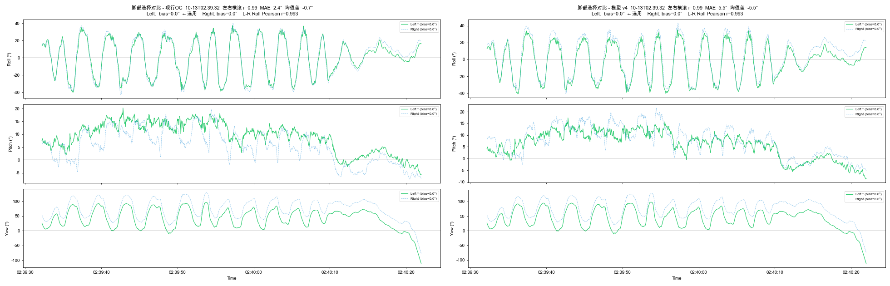
02:50:50 · 56s · 现行 OC OK（相关 0.99，均值差 -0.6°）→ 模型 可疑（相关 0.99，均值差 -5.2°）
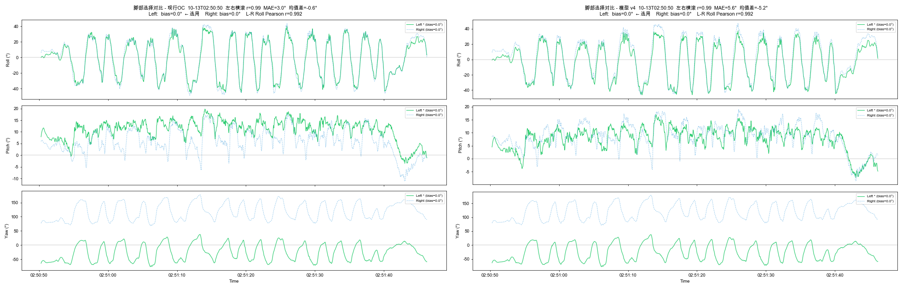
02:34:15 · 45s · 现行 OC OK（相关 1.00，均值差 +0.3°）→ 模型 OK（相关 1.00，均值差 -3.8°）
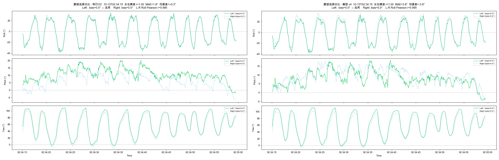
03:27:49 · 68s · 现行 OC OK（相关 0.99，均值差 +1.2°）→ 模型 OK（相关 0.99，均值差 -4.4°）
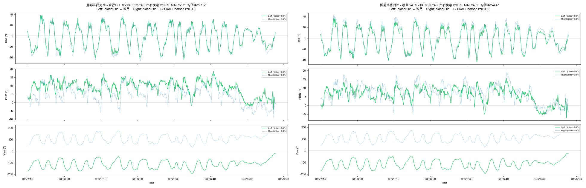
可以看 可以看：模型把现行 OC 的问题修好了 / 晃动大 / 数据有异常
H03 · 10-07 02:00 · 滑行 8.3 分钟
现行 OC：
OK 38% · 可疑 17% · 差 46%模型 v4：
OK 87% · 可疑 13% · 差 0%OC OK 38% → 模型 87%（模型救回）；右脚晃动 49.5°；晃动最大：右脚 50°，挪位 15 次
02:09:43 · 52s · 现行 OC 差（相关 0.96，均值差 +22.0°）→ 模型 OK（相关 0.98，均值差 +4.3°）
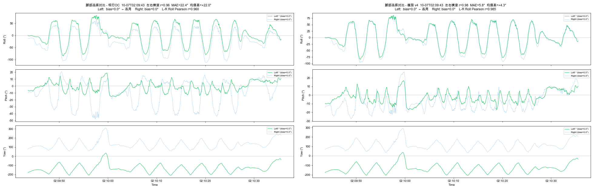
02:25:09 · 56s · 现行 OC 差（相关 0.98，均值差 -10.5°）→ 模型 OK（相关 0.99，均值差 +2.8°）
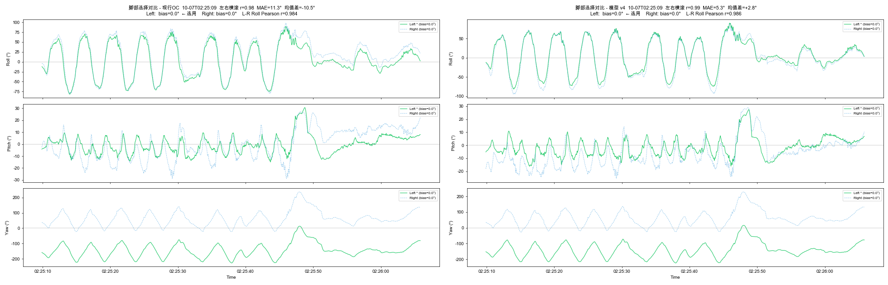
H04 · 10-11 01:48 · 滑行 6.4 分钟
现行 OC：
OK 100% · 可疑 0% · 差 0%模型 v4：
OK 100% · 可疑 0% · 差 0%；数据冻结 11.3%（加门后模型正常）；晃动最大：右脚 9°，挪位 11 次
03:06:58 · 49s · 现行 OC OK（相关 0.99，均值差 -3.9°）→ 模型 OK（相关 0.98，均值差 +1.2°）
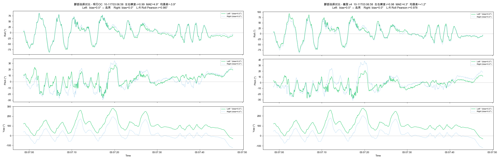
02:50:09 · 30s · 现行 OC OK（相关 0.98，均值差 -4.5°）→ 模型 OK（相关 0.98，均值差 +2.1°）
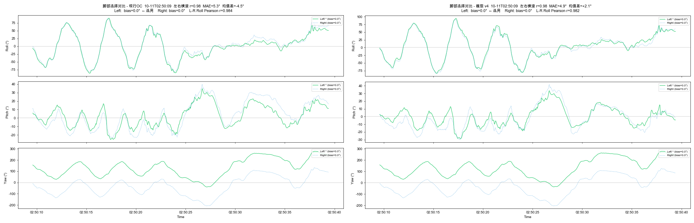
H04 · 10-11 04:56 · 滑行 6.8 分钟
现行 OC：
OK 89% · 可疑 11% · 差 0%模型 v4：
OK 100% · 可疑 0% · 差 0%；数据冻结 53.1%（加门后模型正常）；晃动最大：右脚 14°，挪位 11 次
05:47:08 · 46s · 现行 OC 可疑（相关 0.99，均值差 -5.4°）→ 模型 OK（相关 0.99，均值差 +1.5°）
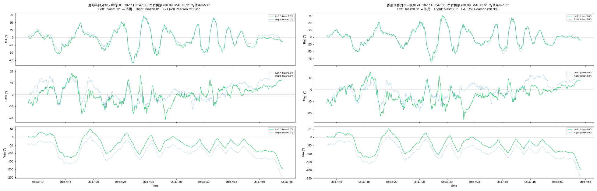
05:23:07 · 55s · 现行 OC OK（相关 0.96，均值差 -3.8°）→ 模型 OK（相关 0.96，均值差 -0.3°）
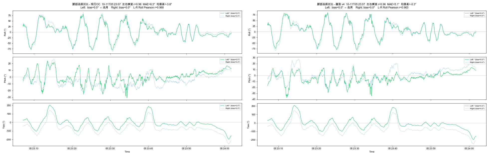
H07 · 10-10 06:06 · 滑行 4.8 分钟
现行 OC：
OK 100% · 可疑 0% · 差 0%模型 v4：
OK 100% · 可疑 0% · 差 0%；数据冻结 5.0%（加门后模型正常）；晃动最大：左脚 5°，挪位 2 次
06:32:25 · 30s · 现行 OC OK（相关 0.98，均值差 +1.4°）→ 模型 OK（相关 0.97，均值差 +0.7°）
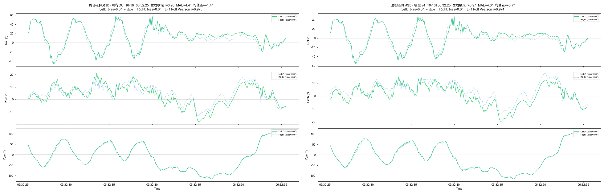
06:25:09 · 29s · 现行 OC OK（相关 0.97，均值差 +0.6°）→ 模型 OK（相关 0.97，均值差 -0.7°）
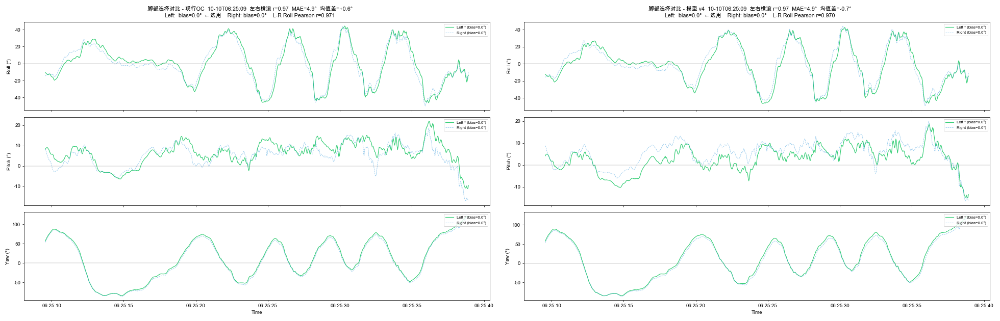
H10 · 10-09 10:23 · 滑行 9.2 分钟
现行 OC：
OK 100% · 可疑 0% · 差 0%模型 v4：
OK 100% · 可疑 0% · 差 0%；数据冻结 25.6%（加门后模型正常）；晃动最大：右脚 10°，挪位 4 次
11:13:11 · 41s · 现行 OC OK（相关 0.98，均值差 -3.5°）→ 模型 OK（相关 0.97，均值差 +0.4°）
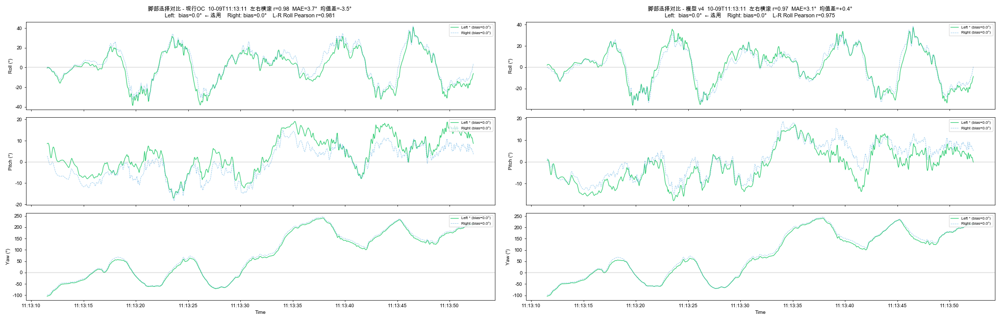
10:55:26 · 44s · 现行 OC OK（相关 0.99，均值差 -1.9°）→ 模型 OK（相关 0.97，均值差 -0.2°）
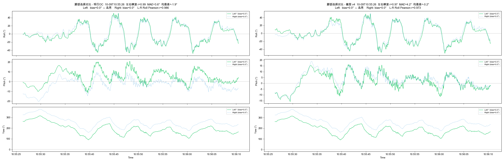
H10 · 10-09 12:52 · 滑行 3.2 分钟
现行 OC：
OK 66% · 可疑 34% · 差 0%模型 v4：
OK 100% · 可疑 0% · 差 0%OC OK 66% → 模型 100%（模型救回）；数据冻结 36.1%（加门后模型正常）；晃动最大：右脚 6°，挪位 1 次
12:59:57 · 65s · 现行 OC 可疑（相关 0.99，均值差 +5.1°）→ 模型 OK（相关 0.99，均值差 -3.8°）
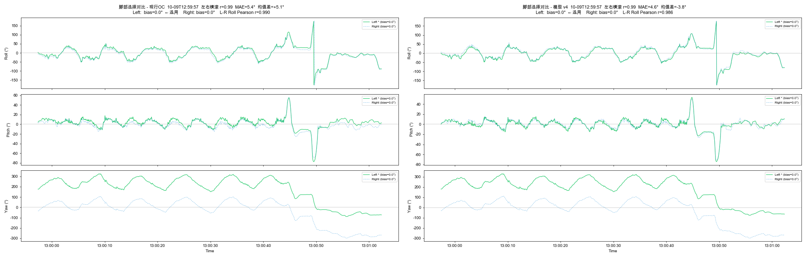
13:07:40 · 48s · 现行 OC OK（相关 0.98，均值差 +4.1°）→ 模型 OK（相关 0.98，均值差 -2.6°）
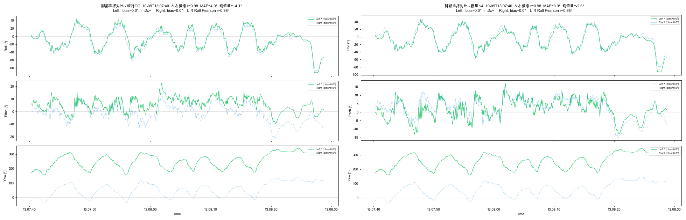
H14 · 10-13 02:40 · 滑行 8.1 分钟
现行 OC：
OK 30% · 可疑 8% · 差 62%模型 v4：
OK 100% · 可疑 0% · 差 0%OC OK 30% → 模型 100%（模型救回）；右脚晃动 47.5°；晃动最大：右脚 48°，挪位 11 次
03:29:57 · 84s · 现行 OC 差（相关 0.97，均值差 +29.6°）→ 模型 OK（相关 0.98，均值差 -0.4°）
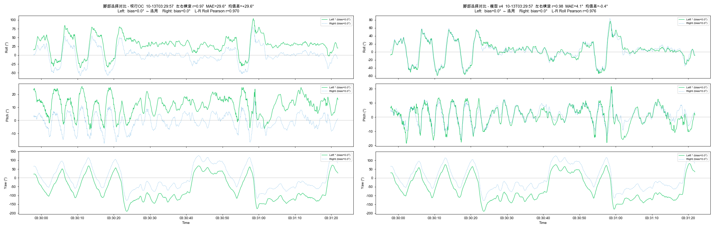
03:18:41 · 39s · 现行 OC 差（相关 0.98，均值差 +24.8°）→ 模型 OK（相关 0.98，均值差 -0.9°）
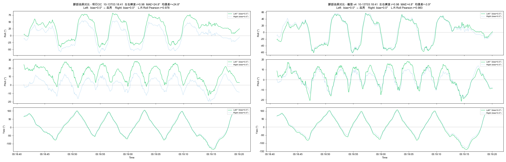
H15 · 10-07 01:47 · 滑行 5.4 分钟
现行 OC：
OK 0% · 可疑 92% · 差 8%模型 v4：
OK 100% · 可疑 0% · 差 0%OC OK 0% → 模型 100%（模型救回）；晃动最大：右脚 12°，挪位 4 次
02:40:00 · 25s · 现行 OC 差（相关 1.00，均值差 -16.5°）→ 模型 OK（相关 0.99，均值差 -1.5°）
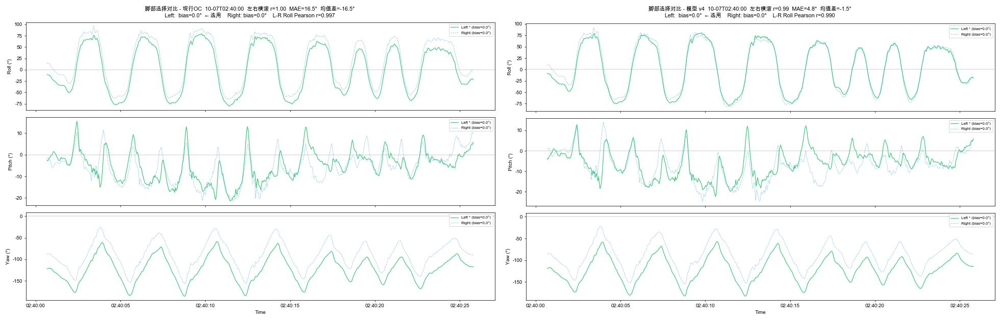
02:10:46 · 29s · 现行 OC 可疑（相关 0.97，均值差 -9.6°）→ 模型 OK（相关 0.96，均值差 -1.0°）
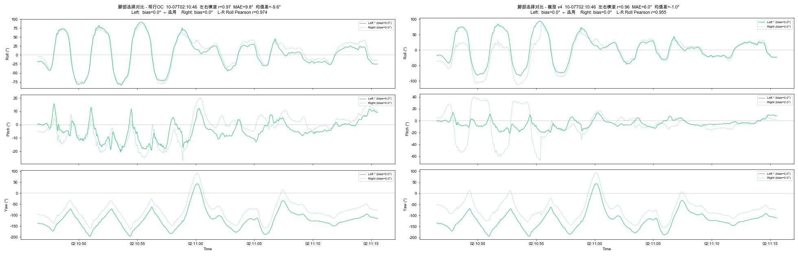
H15 · 10-08 01:32 · 滑行 7.1 分钟
现行 OC：
OK 39% · 可疑 39% · 差 23%模型 v4：
OK 100% · 可疑 0% · 差 0%OC OK 39% → 模型 100%（模型救回）；右脚晃动 16.6°；晃动最大：右脚 17°，挪位 11 次
03:42:15 · 42s · 现行 OC 差（相关 0.95，均值差 -11.2°）→ 模型 OK（相关 0.95，均值差 +0.7°）
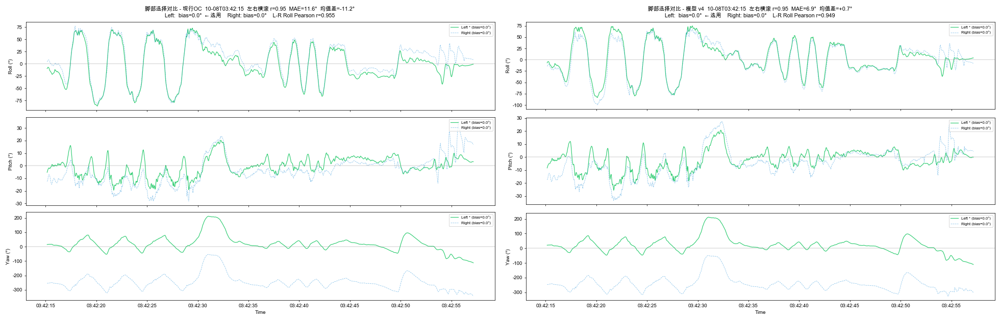
02:15:52 · 30s · 现行 OC 差（相关 0.99，均值差 +11.1°）→ 模型 OK（相关 0.99，均值差 -0.7°）
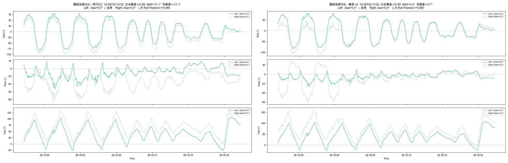
H15 · 10-12 01:34 · 滑行 8.2 分钟
现行 OC：
OK 29% · 可疑 28% · 差 43%模型 v4：
OK 85% · 可疑 15% · 差 0%OC OK 29% → 模型 85%（模型救回）；右脚晃动 51.8°；晃动最大：右脚 52°，挪位 14 次
04:01:10 · 28s · 现行 OC 差（相关 0.95，均值差 -54.6°）→ 模型 OK（相关 0.98，均值差 +1.6°）
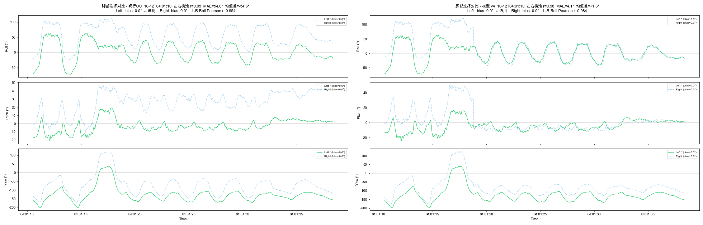
02:00:30 · 26s · 现行 OC 差（相关 0.99，均值差 -30.9°）→ 模型 OK（相关 0.99，均值差 -3.6°）
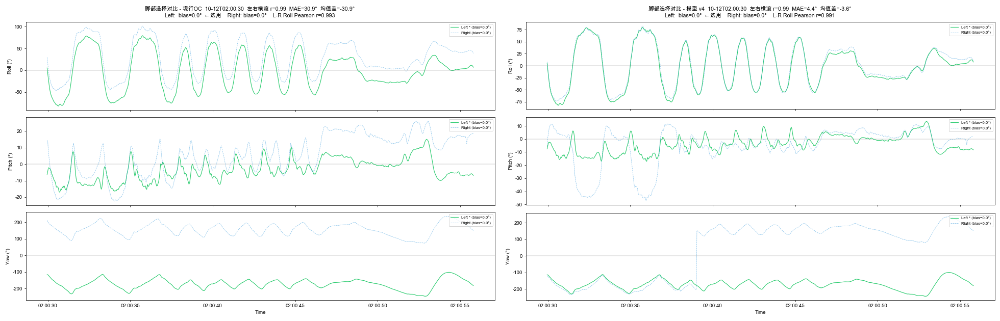
H15 · 10-16 01:31 · 滑行 8.2 分钟
现行 OC：
OK 38% · 可疑 62% · 差 0%模型 v4：
OK 100% · 可疑 0% · 差 0%OC OK 38% → 模型 100%（模型救回）；晃动最大：右脚 8°，挪位 11 次
01:54:52 · 53s · 现行 OC 可疑（相关 0.98，均值差 -9.4°）→ 模型 OK（相关 0.98，均值差 -0.2°）
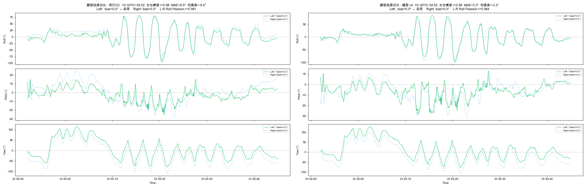
02:05:33 · 46s · 现行 OC 可疑（相关 0.98，均值差 -8.8°）→ 模型 OK（相关 0.98，均值差 -0.3°）
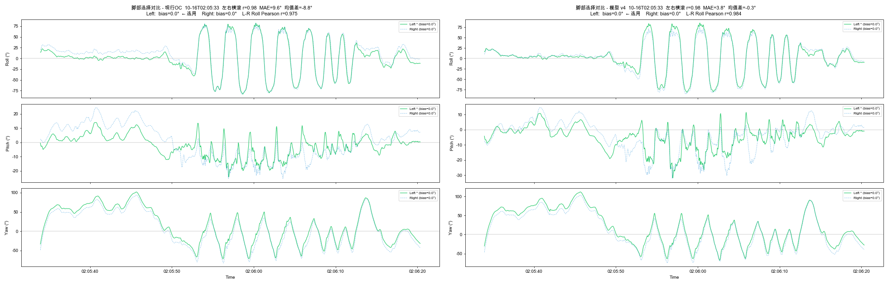
H17 · 10-07 02:19 · 滑行 4.6 分钟
现行 OC：
OK 0% · 可疑 63% · 差 37%模型 v4：
OK 91% · 可疑 9% · 差 0%OC OK 0% → 模型 91%（模型救回）；右脚晃动 17.2°；数据冻结 5.5%（加门后模型正常）；晃动最大：右脚 17°，挪位 7 次
02:55:45 · 23s · 现行 OC 差（相关 0.95，均值差 -16.9°）→ 模型 OK（相关 0.97，均值差 -1.4°）
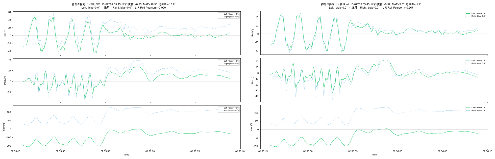
02:42:49 · 21s · 现行 OC 差（相关 0.95，均值差 -15.3°）→ 模型 OK（相关 0.96，均值差 +0.7°）
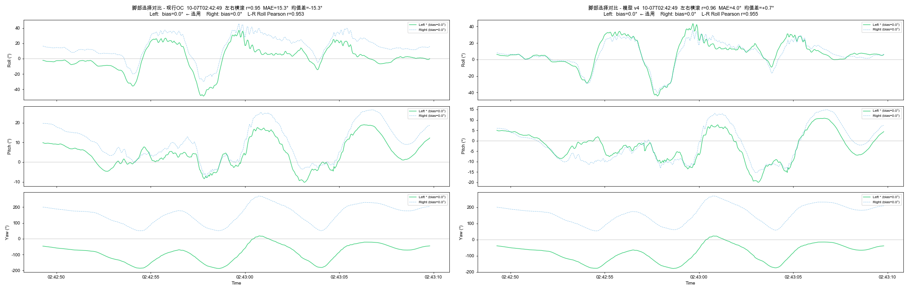
H17 · 10-13 02:24 · 滑行 1.6 分钟
现行 OC：
OK 61% · 可疑 0% · 差 39%模型 v4：
OK 100% · 可疑 0% · 差 0%OC OK 61% → 模型 100%（模型救回）；右脚晃动 16.2°；晃动最大：右脚 16°，挪位 4 次
02:39:41 · 39s · 现行 OC 差（相关 0.99，均值差 +19.3°）→ 模型 OK（相关 0.99，均值差 -3.7°）
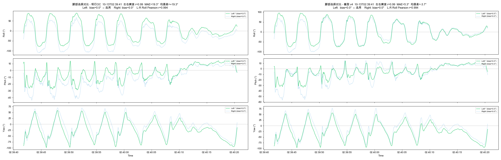
02:34:08 · 60s · 现行 OC OK（相关 0.98，均值差 +0.3°）→ 模型 OK（相关 0.99，均值差 +3.2°）
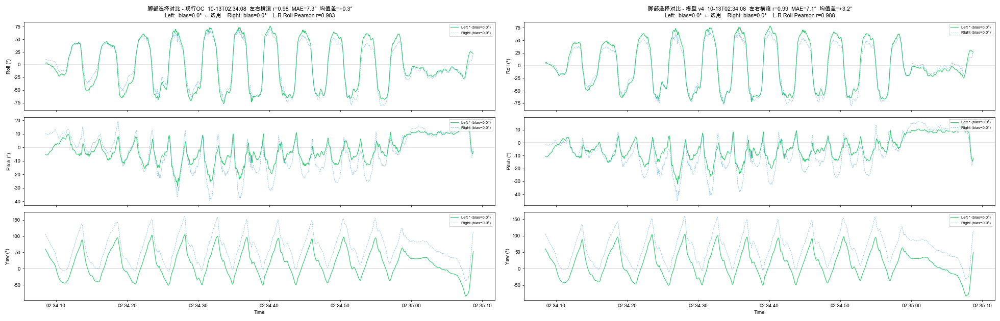
H17 · 10-13 02:48 · 滑行 5.5 分钟
现行 OC：
OK 81% · 可疑 19% · 差 0%模型 v4：
OK 81% · 可疑 19% · 差 0%；87° 立刃那场：右脚单侧受力形变，校准修不掉；晃动最大：右脚 5°，挪位 2 次
02:57:33 · 70s · 现行 OC OK（相关 0.99，均值差 +2.4°）→ 模型 OK（相关 0.99，均值差 +1.0°）
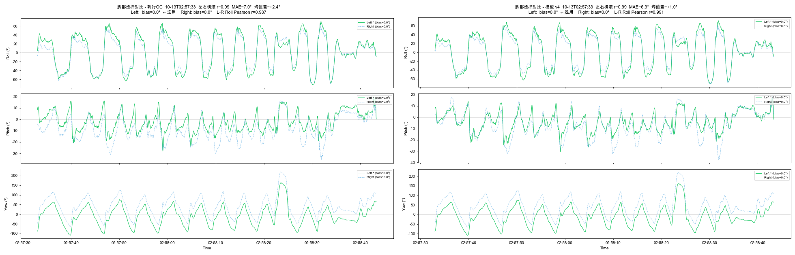
02:50:51 · 57s · 现行 OC OK（相关 0.99，均值差 -2.6°）→ 模型 OK（相关 1.00，均值差 +3.0°）
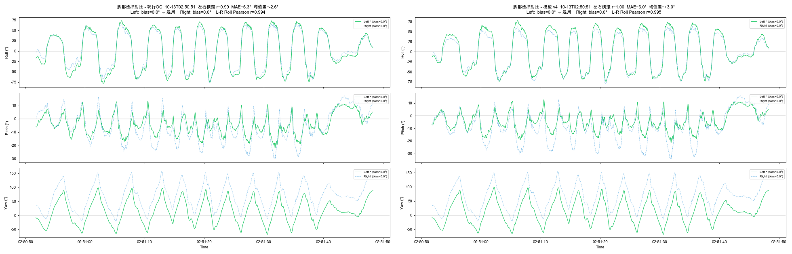